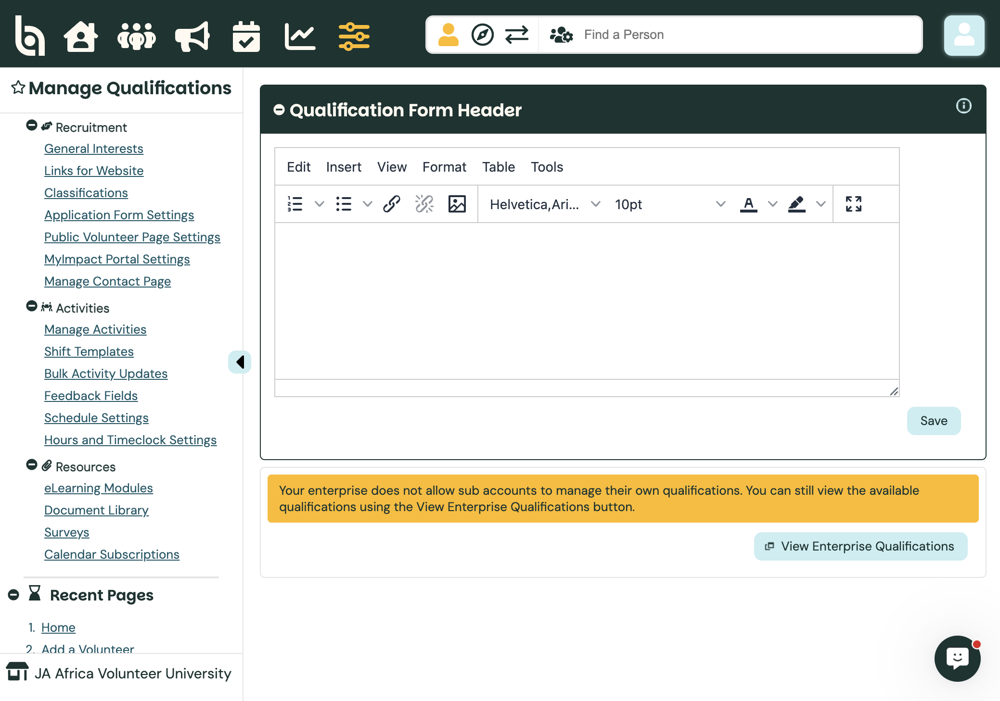
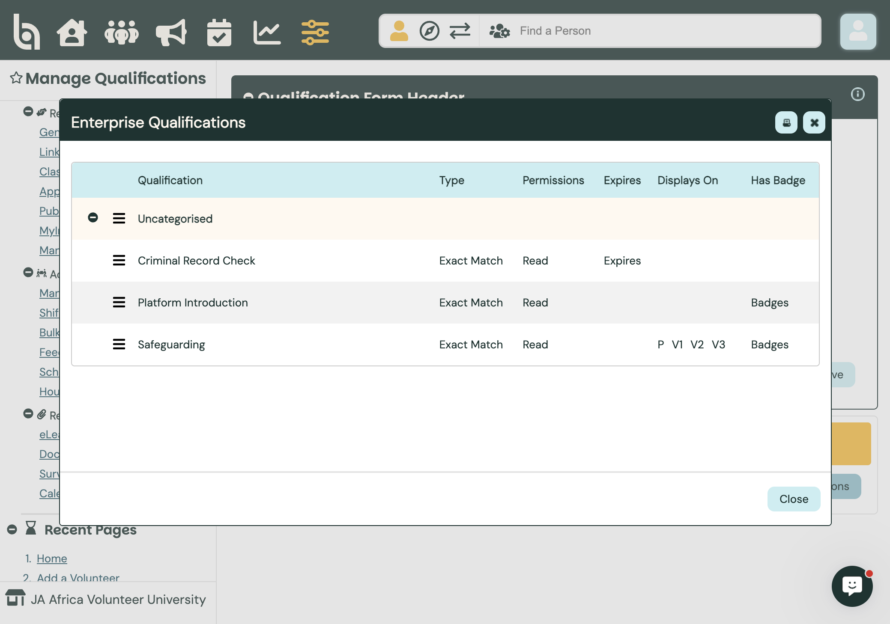
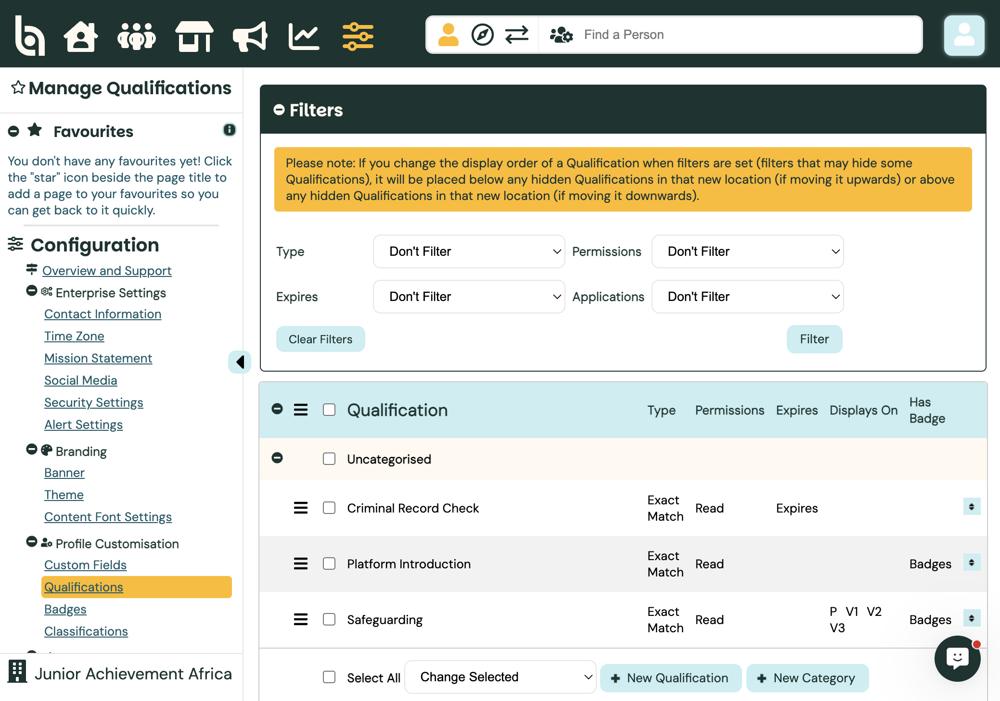
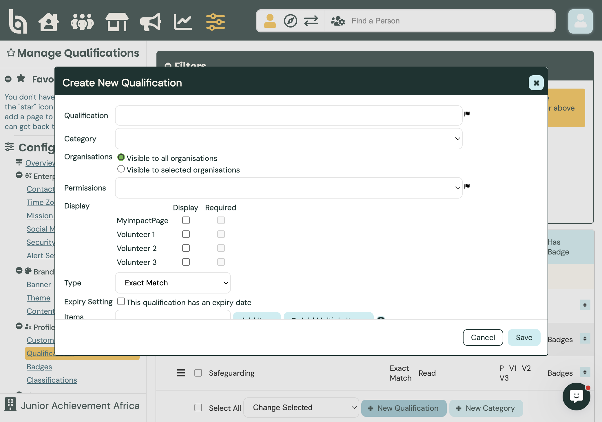
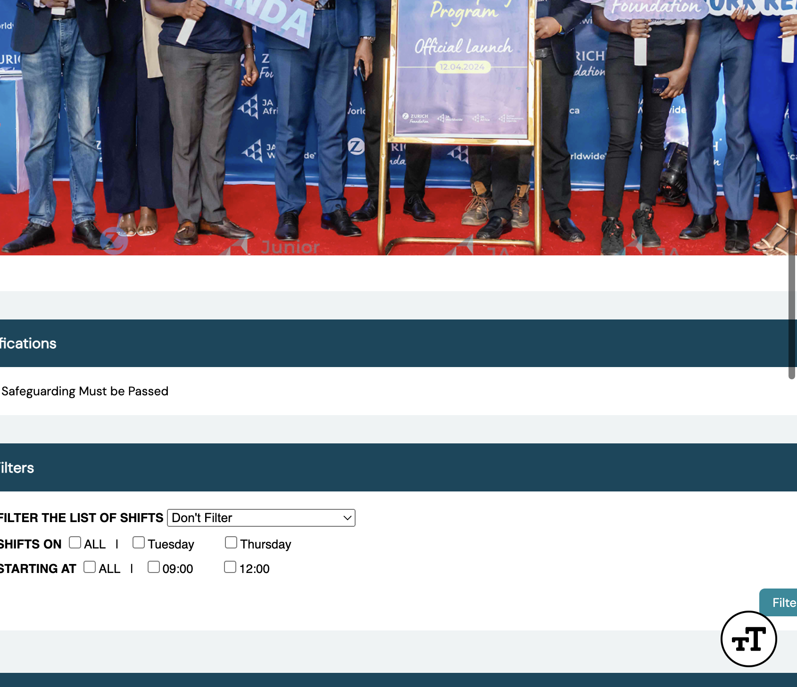
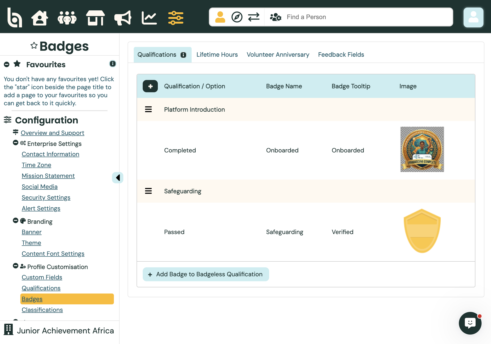
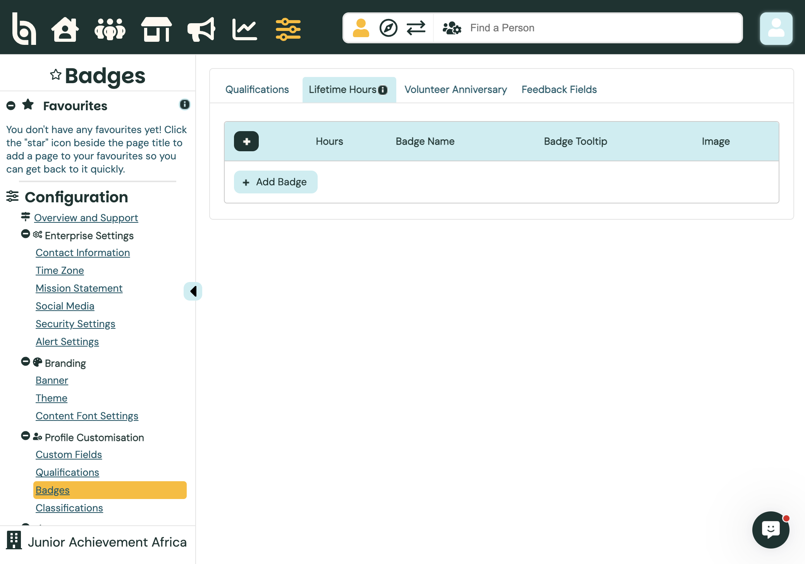

Admin guide
Audience · AdministratorCreating Qualifications & Badges
Qualifications track eligibility (training, compliance, onboarding) and can control which opportunities a volunteer sees. Badges are visual recognition for reaching a qualification option, hour total, anniversary, or feedback milestone — they do not grant access by themselves.
Path: Configuration → Profile Customisation → Qualifications / Badges · Docs: BI data collection guide
Qualifications vs custom fields vs badges
Custom fields collect profile data for reporting and filters. They do not control activity visibility or shift sign-up.
Qualifications track eligibility. Use them when a value must match (or meet a minimum rank) before a volunteer can see or be assigned to an activity. Typical DeJAVU examples: Safeguarding, Platform Introduction, Criminal Record Check.
Badges display on the volunteer profile when a linked qualification option (or hours / anniversary / feedback rule) is met. Recognition only — not a substitute for activity qualification settings.
JA Africa default: Qualifications are created and owned at the Junior Achievement Africa enterprise. Sub-accounts such as JA Africa Volunteer University cannot create their own.
Organisation view: qualifications are locked
Switch into an organisation (Phase 1: JA Africa Volunteer University). Open Configuration → Profile Customisation → Qualifications.
You see a yellow notice that the enterprise does not allow sub-accounts to manage their own qualifications, plus View Enterprise Qualifications. You can still edit the Qualification Form Header text for volunteers in that org.

Locked at orgOther BI options: Some enterprises allow each sub-account to manage its own qualifications. DeJAVU keeps them enterprise-owned so Safeguarding and onboarding stay consistent across countries.
View the enterprise qualification list from an org
Click View Enterprise Qualifications. The modal lists every qualification the enterprise shares with this organisation.
Current JA Africa set (Uncategorised): Criminal Record Check (Exact Match, Read, expires), Platform Introduction (Exact Match, Read, has badges), Safeguarding (Exact Match, Read, displays on MyImpactPage and application forms, has badges).

SafeguardingManage qualifications at enterprise
Enter the Junior Achievement Africa enterprise account. Path: Configuration → Profile Customisation → Qualifications (Manage Qualifications).
Here you can reorder, filter, edit, create categories, and add new qualifications. The same three qualifications appear under Uncategorised, with + New Qualification and + New Category at the bottom.

New QualificationBulk actions under Change Selected can update permissions, display / required settings, or which organisations see the qualification — without opening each one.
Create a new qualification (enterprise)
Click + New Qualification. Fill the Create New Qualification dialog:
Qualification Name — clear label volunteers and reports will see.
Category — optional group heading (or leave Uncategorised).
Organisations — Visible to all organisations, or only selected sub-accounts (enterprise-only control).
Permissions — what volunteers can do (for compliance items like Safeguarding / Criminal Record Check, JA Africa uses Read so volunteers see status but admins set the value).
Display — tick MyImpactPage and/or Volunteer application forms 1–3, and whether the field is Required on that surface.
Type — Exact Match (activity needs a specific option, e.g. Passed) or Ranked (activity needs at least a minimum level; order items from lowest at top to highest at bottom).
Optional: This qualification has an expiry date (used for Criminal Record Check on DeJAVU).
Items — add the dropdown values (e.g. Passed / Failed / Pending). Then Save — only when you intend to change live config.

Name and typeOther BI options: Private permissions for sensitive data; Ranked types for progressive skills; expiry for certifications that renew. Do not create duplicate Safeguarding qualifications — reuse the shared enterprise one.
How qualifications are used day to day
Once values are set on volunteer profiles, qualifications support three common DeJAVU jobs:
1. Group volunteers — In People search, reports, and pinned searches, filter by qualification name and option (for example Safeguarding = Passed, or Platform Introduction = Completed). That list is your working group for follow-up.
2. Restrict opportunities — On an activity, set Visibility / qualification requirements so only volunteers who hold the required option can see or sign up (Better Impact “if qualified” behaviour). Exact Match needs that exact item; Ranked needs that level or higher.
3. Send targeted emails — Run a search or report filtered by qualification, then use Communications to email that result set (for example everyone still Pending on Safeguarding, or everyone who Completed Platform Introduction). Committees are a separate grouping tool for ongoing teams; qualifications are better when eligibility or compliance is the filter.
Assign the qualification value on the volunteer profile (or via bulk update) before you expect filters, emails, or opportunity visibility to change.
Safeguarding and opportunity visibility
On DeJAVU, the enterprise Safeguarding qualification is the gate for opportunities. Activities are configured so volunteers must have Safeguarding = Passed before the opportunity is available to them.
Until Safeguarding is Passed, volunteers typically do not get a usable Opportunities list (they are steered through the Profile Checklist / Safeguarding declaration instead). After Passed, activity detail pages show the requirement clearly, for example Safeguarding Must be Passed under Qualifications.

Must be PassedVolunteer walkthrough: Complete Safeguarding and Apply for Opportunities. Admins who review declarations need a role that can update the Safeguarding value (for example Recruitment Admin / Safeguarding Reviewer).
Badges (enterprise)
Path (enterprise): Configuration → Profile Customisation → Badges. Four tabs:
Qualifications — link a badge image and tooltip to a qualification option. JA Africa already has Platform Introduction → Completed → Onboarded and Safeguarding → Passed → Safeguarding (Verified).

Qualification badgesLifetime Hours, Volunteer Anniversary, and Feedback Fields — award badges for hour totals, years of service, or feedback milestones. These tabs may be empty until you add rules with + Add Badge.

Add hours badgeRemember: Earning the Safeguarding badge celebrates Passed status; opportunity access still comes from the activity’s qualification / visibility settings, not from the badge image.